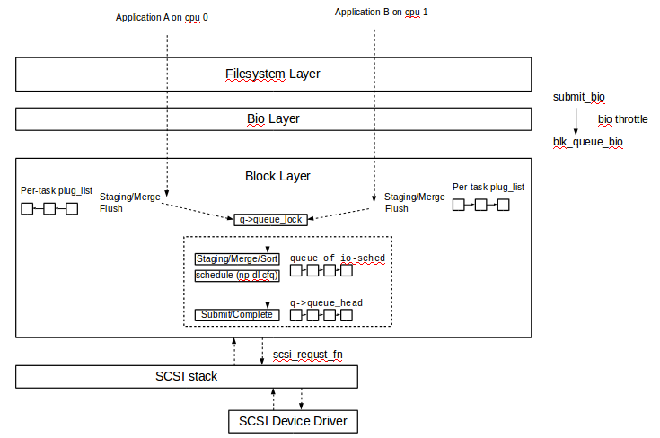
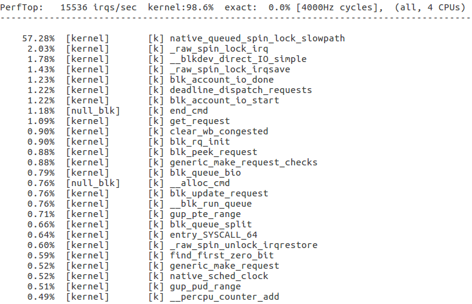
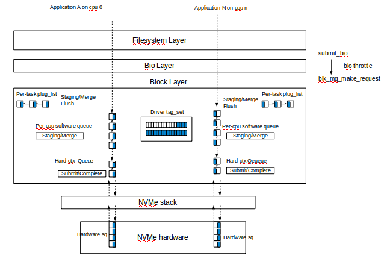

The scalability under multiple cores (even with NUMA) and high IOPS NAND-flash SSD is the bottleneck.
Request queue lock which synchronizes the exclusive resource of one request_queue is really a devil. It will cause high contention and continuously cache-line bounce on muliple-cores system, even worse on NUMA.
Both of them will harm the performance of block layer on high IOPS SSDs.
(It seems to be acceptable on slow storage device such as HHD)
Nearly all the operations in block layer need this request queue lock.
The perf top result on blk-null.
sudo modprobe null_blk queue_mode=2 completion_nsec=0 irqmode=0
Data on an HDD is stored in concentric tracks on platters (the recording media). An actuator arm with a read/write head moves on top of the platter to perform the actual read or write operation, moving from track to track. The moving of the actuator arm is costly. A lot of heuristics and optimizations in block layer serve for reducing actuator arm movements. They are good for HDD, but maybe not for SSD.
block legacy layer is not for _high_speed_ SSDs
Oct 24 2013 blk-mq: new multi-queue block IO queueing mechanism 3.12.0-rc5 320ae51 Jan 17 2014 scsi: add support for a blk-mq based I/O path 3.16.0-rc5 d285203 Jan 17 2017 blk-mq-sched: add framework for MQ capable IO schedulers 4.10.0-rc3 bd166ef Jun 16 2017 scsi: default to scsi-mq 4.12.0-rc5 5c279bd Aug 13 2017 Revert "scsi: default to scsi-mq" 4.13 cbe7dfaThe performance regression which cause the revert and its fix:
The performance regression "In Red Hat internal storage test wrt. blk-mq scheduler, we found that I/O performance is much bad with mq-deadline, especially about sequential I/O on some multi-queue SCSI devcies(lpfc, qla2xxx, SRP...) Turns out one big issue causes the performance regression: requests are still dequeued from sw queue/scheduler queue even when ldd's queue is busy, so I/O merge becomes quite difficult to make, then sequential IO performance degrades a lot. This issue becomes one of mains reasons for reverting default SCSI_MQ in V4.13."https://lkml.org/lkml/2017/10/14/65

The tags
Device command tagging was first introduced with hardware supporting native command queuing. A tag
is an integer value that uniquely identifies the position of the block IO in the driver submission queue, so when completed
the tag is passed back from the device indicating which IO has been completed. This eliminates the need to perform a
linear search of the in-flight window to determine which IO has completed.
On the other hand, these tags could indicate the capacity of the hardware submit queue.
The nvme exploit the tags in blk-mq fully.
nvme_queue_rq()
-> nvme_setup_cmd()
-> cmd->common.command_id = req->tag;
nvme_irq()
-> nvme_proccess_cq()
-> nvme_handle_cqe()
-> blk_mq_tag_to_rq()
-> nvme_end_request() // cqe->command_id
-> blk_mq_complete_request()
There is two kinds of tags in blk-mq, sched-tags and driver-tags.We split driver and scheduler tags, so we can run the scheduling independently of device queue depth.In the blk-mq code:
blk_mq_init_sched()
>>>>
/*
* Default to double of smaller one between hw queue_depth and 128,
* since we don't split into sync/async like the old code did.
* Additionally, this is a per-hw queue depth.
*/
q->nr_requests = 2 * min_t(unsigned int, q->tag_set->queue_depth,
BLKDEV_MAX_RQ); //BLKDEV_MAX_RQ 128
queue_for_each_hw_ctx(q, hctx, i) {
ret = blk_mq_sched_alloc_tags(q, hctx, i);
if (ret)
goto err;
}
>>>>
The max nr_tags of sched is 256. For the qla2xxx of which queue depth is 4096, is it too small ?.
IO scheduler in blk-mq
Quote from Jen's paper Linux Block IO: Introducing Multi-queue SSD Access on Multi-core Systems
While global sequential re-ordering is still possible across the multiple software queues, it is only necessary for HDD based devices, where the additional latency and locking overhead required to achieve total ordering does not hurt IOPS performance." "for many users, it is no longer necessary to employ advanced fairness scheduling as the speed of the devices are often exceeding the ability of even multiple applications to saturate their performance. If fairness is essential, it is possible to design a scheduler that exploits the characteristics of SSDs at coarser granularity to achieve lower performance overhead"The 3 io schedulers in current blk-mq seems to accord with what jens said. The available io scheduler for blk-mq
BFQ is a complex scheduler that is designed to provide good interactive response, especially on those slower devices. It has a relatively high per-operation overhead, which is justified when the I/O operations themselves are slow and expensive. This complexity may not make sense, though, in situations where I/O operations are cheap and throughput is a primary concern. When running a server workload using solid-state devices, it may be better to run a much simpler scheduler that allows for request merging and perhaps some simple policies, but which mostly stays out of the way. Except for the lightweight, the intention of kyber is to keep low level latency of prioritized requests. There are 3 domain there: READ, SYNC_WRITE, and OTHER (async writes, discard) Note: some request will bypass the io scheduler, such as flush.How does it work ?
kyber_dispatch_request()
-> kyber_dispatch_cur_domain()
>>>>
rqs = &khd->rqs[khd->cur_domain];
rq = list_first_entry_or_null(rqs, struct request, queuelist);
/*
* If there wasn't already a pending request and we haven't flushed the
* software queues yet, flush the software queues and check again.
*/
if (!rq && !*flushed) {
kyber_flush_busy_ctxs(khd, hctx);
// flush the requests from the ctx software queue to kyber queue.
*flushed = true;
rq = list_first_entry_or_null(rqs, struct request, queuelist);
}
if (rq) {
nr = kyber_get_domain_token(kqd, khd, hctx);
-> __sbitmap_queue_get()
if (nr >= 0) {
khd->batching++;
rq_set_domain_token(rq, nr);
list_del_init(&rq->queuelist);
return rq;
}
}
>>>>
Every domain has its own queue depth, look at the default ones:
static const unsigned int kyber_depth[] = {
[KYBER_READ] = 256,
[KYBER_SYNC_WRITE] = 128,
[KYBER_OTHER] = 64,
};
It is similar with the blk-mq tags, but it is called token here.
The queue size of every domain will be resized based on the req latency.
kyber exploit the blk_stat mechanism to collect latency statistics and Adjust
the domain queue size in the blk_stat timer fn.
static int kyber_lat_status(struct blk_stat_callback *cb,
unsigned int sched_domain, u64 target)
{
u64 latency;
if (!cb->stat[sched_domain].nr_samples)
return NONE;
latency = cb->stat[sched_domain].mean;
if (latency >= 2 * target)
return AWFUL;
else if (latency > target)
return BAD;
else if (latency <= target / 2)
return GREAT;
else /* (latency <= target) */
return GOOD;
}
static void kyber_stat_timer_fn(struct blk_stat_callback *cb)
{
struct kyber_queue_data *kqd = cb->data;
int read_status, write_status;
read_status = kyber_lat_status(cb, KYBER_READ, kqd->read_lat_nsec);
write_status = kyber_lat_status(cb, KYBER_SYNC_WRITE, kqd->write_lat_nsec);
kyber_adjust_rw_depth(kqd, KYBER_READ, read_status, write_status);
kyber_adjust_rw_depth(kqd, KYBER_SYNC_WRITE, write_status, read_status);
kyber_adjust_other_depth(kqd, read_status, write_status,
cb->stat[KYBER_OTHER].nr_samples != 0);
/*
* Continue monitoring latencies if we aren't hitting the targets or
* we're still throttling other requests.
*/
if (!blk_stat_is_active(kqd->cb) &&
((IS_BAD(read_status) || IS_BAD(write_status) ||
kqd->domain_tokens[KYBER_OTHER].sb.depth < kyber_depth[KYBER_OTHER])))
blk_stat_activate_msecs(kqd->cb, 100);
}
There is no insert_requests callbacks in kyber, so the merge/sort will be done
by the ctx software queue.
Quiesce and Freeze
Quiescing and freezing a blk-mq queue is different.
Let's check the source code.
blk_mq_quiesce_queue()
>>>>
blk_mq_quiesce_queue_nowait(q);
>>>>
spin_lock_irqsave(q->queue_lock, flags);
queue_flag_set(QUEUE_FLAG_QUIESCED, q);
spin_unlock_irqrestore(q->queue_lock, flags);
>>>>
queue_for_each_hw_ctx(q, hctx, i) {
if (hctx->flags & BLK_MQ_F_BLOCKING)
synchronize_srcu(hctx->queue_rq_srcu);
else
rcu = true;
}
if (rcu)
synchronize_rcu();
>>>>
__blk_mq_run_hw_queue()
>>>>
if (!(hctx->flags & BLK_MQ_F_BLOCKING)) {
rcu_read_lock();
run_queue = blk_mq_sched_dispatch_requests(hctx);
rcu_read_unlock();
} else {
might_sleep();
srcu_idx = srcu_read_lock(hctx->queue_rq_srcu);
run_queue = blk_mq_sched_dispatch_requests(hctx);
srcu_read_unlock(hctx->queue_rq_srcu, srcu_idx);
}
>>>>
The rcu or srcu lock are used to confirm the blk_mq_sched_dispatch_requests()
has returned.
So when the blk_mq_quiesce_queue() returns, we could ensure that all the
blk_mq_sched_dispatch_requests() following could see the QUEUE_FLAG_QUIESCED and
returns.
When the queue is quiesced, the requests will not be handled, but could be allocated and queued.
blk_mq_freeze_queue() will increase the q->mq_freeze_depth and wait until the
q->q_usage_counter.
This two counter play very important role in blk-mq path.
q_usage_counter covers nearly all the path of blk-mq, more importantly, every
request will hold one reference of q_usage_counter until it is freed.
blk_mq_make_request()
-> blk_mq_get_request()
-> blk_queue_enter_live()
// add 1 here
blk_mq_free_request()
-> blk_queue_exit()
Other other hand, the mq_freeze_depth will gate blk-mq path.
generic_make_request()
-> blk_queue_enter()
>>>>
ret = wait_event_interruptible(q->mq_freeze_wq,
!atomic_read(&q->mq_freeze_depth) ||
blk_queue_dying(q));
>>>>
Therfore, we know that when the blk_mq_free_queue() returns, all the requests
has been drained and no new request will enter the io path.
An issue about the queue quiesced flag.
Mapping between ctx and hctx
Look at the source code
blk_mq_alloc_tag_set()
-> blk_mq_update_queue_map()
-> blk_mq_map_queues()
>>>>
for_each_possible_cpu(cpu) { use possible_cpu here
/*
* First do sequential mapping between CPUs and queues.
* In case we still have CPUs to map, and we have some number of
* threads per cores then map sibling threads to the same queue for
* performace optimizations.
*/
if (cpu < nr_queues) {
map[cpu] = cpu_to_queue_index(nr_queues, cpu);
} else {
first_sibling = get_first_sibling(cpu);
if (first_sibling == cpu)
map[cpu] = cpu_to_queue_index(nr_queues, cpu);
else
map[cpu] = map[first_sibling];
}
>>>>
blk_mq_init_allocated_queue()
-> q->mq_map = set->mq_map
-> blk_mq_map_swqueue()
>>>>
for_each_present_cpu(i) {
hctx_idx = q->mq_map[i]; // the hctx to which this cpu are mapped
>>>>
ctx = per_cpu_ptr(q->queue_ctx, i);
hctx = blk_mq_map_queue(q, i);
cpumask_set_cpu(i, hctx->cpumask); // mark this cpu on the hctx
ctx->index_hw = hctx->nr_ctx;
hctx->ctxs[hctx->nr_ctx++] = ctx;
}
>>>>
this index_hw is very important, the hw queue will know there is pending request on the ctx queue through it.
__blk_mq_insert_request()
-> __blk_mq_insert_request()
-> blk_mq_hctx_mark_pending()
-> sbitmap_set_bit(&hctx->ctx_map, ctx->index_hw);
blk_mq_flush_busy_ctxs()
-> sbitmap_for_each_set(&hctx->ctx_map, flush_busy_ctx, &data);
Currently, blk-mq only do the mapping with present cpu. This is due to a commit:4b855ad (blk-mq: Create hctx for each present CPU)
302ad8c (nvme: Complete all stuck requests)When we suspend the nvme device, the reqs that has been started will be cancelled and requeued, but the q->q_usage_counter will still be held. Because the queue has been quiesced, these rqs cannot be handled and q->q_usage_counter cannot be released, the cpu hotplug in blk-mq process cannot make progress forward and stucks there.
I am not doing a hot unplug and the replug, I use KVM and add a previously not available CPU.The cpu_present_mask could be modified at this moment, the WARN_ON in __blk_mq_run_hw_queue will be triggered.
WARN_ON(!cpumask_test_cpu(raw_smp_processor_id(), hctx->cpumask) &&
cpu_online(hctx->next_cpu));
On the other hand, the new present cpu ctx->index_hw is zero, when there is pending reqs on its software queue,
the hctx will goto ctx of cpu0 to get rqs, the reqs on the new present cpu cannot be handled forever.